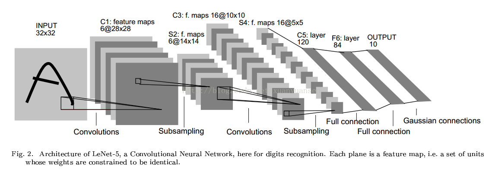

引言
Udacity上的深度学习课程学习到了第四大节,卷积神经网络.这一部分使用到的数据与前面几节是一样的,都是notMINST的数据,而且就是第一章数据预处理后得到的相对干净的可以直接拿来用的数据.
这一章当中,老师讲到我们做图像处理的时候选择使用绝大多数时候都是使用卷积神经网络,而不是普通的全连接的神经网络,因为我们已经明确我们的数据类型就是数字图像,所以我们要充分使用到这些图像的特征.我想这种充分利用数据特征的思想,在我们的学习和探索的过程当中非常具有指导意义.
闲话不说,放码过来吧!
数据集的提取
首先添加头文件,事实上这一块的代码应该是在后面需要用到的过程中再作添加的,但是为了保证该blog的代码可以重新复制粘贴之后可以使用,所以我就全部添加进来了.阅读时可先跳过这一段
然后就是使用Python中的pickle()函数恢复数据集对象,文件路径自行替换.
到此,代码的运行结果如下(可以看到和计算数据集维度):
上面得到的仅仅是我们的原始数据集,还不是十分符合tensorflow中tf.nn.conv2d中数据格式(符合要求的数据集形式应该是 [卷积核的高度，卷积核的宽度，图像通道数，卷积核个数],详情见下文解释),所以对数据进行进一步的格式化处理.
得到的结果如下:
注意到,我们的数据是黑白图像,所以channel是1.自此,数据整理完毕
构建一个简单的卷积神经网络
我们将要构建的卷积神经网络超级无敌简单,就只有两个卷积层和一个全连接层.
在这里,我们先定义一个计算精确度的函数accuracy(),思想很简单就是准确预测的结果个数和所有预测次数的比值:
接着正式开始构建卷积神经网络
在构建这一个如此简答的卷积神经网络花了我好多时间,其中很大一个原因就是卷积层的计算和理解.一个四维的数据( ⊙o⊙ )我花了不少时间来研究了一下构建卷积神经网络的核心函数tf.nn.conv2d(),理解其输入和输出.其详细的探索过程,参见本人的另外一篇拙文探索tf.nn.conv2d()
训练神经网络
训练的过程就是一个普通的随机梯度下降法的实现过程,很容易理解.
该训练过程产出的训练结果如下所示:
该训练结果,嗯,说实话,并不是很好,还不如之前训练的普通的三层神经网络.毕竟这个网络结果太简单了,还有很多的改进空间.
添加池化层
上面的卷积神经网络是使用卷积核的步长来压缩数据空间的,而我们普遍的卷积神经网络都是使用池化层来进行该步骤哦.在tensorflow中池化层所使用的函数有一个常用的是tf.nn.max_pool(),在这里只需要修改一下卷积神经网络构建部分的代码即可
这只是一个简单修改,具体修改内容可以看注释进行对比,然后训练添加了池化层的模型.该训练的过程跟上面的卷积神经网络一毛一样,仅用来对比训练结果.
得到的训练结果如下所示:
结果有了一点点的改善,改善不是特别的明显.
实现一个经典的LeNet5网络结构
LeNet5是一个十分经典的卷积神经网络,其机构如下所示:

结果如下
根据该图,我们只需要修改tensorflow中graph的代码,即可构造一个类似于的LeNet5网络架构的网络了.
注意,修改了网络结构需要重新计算最后生成图片的大小.
训练该生成模型,因为该模型收敛得慢一些,所以,我增加了训练的次数,从1001次改成了10001次.并且可以观察到,该模型已经逐渐趋于稳定了.
训练结果如下所示:
从该结果可以明显看到图像识别的效率得到了显著的提高.
总结
通过仔细分析和动手构造一些简单的经典的神经网络,可以让我们更加直观深入得去了解熟悉和应用我们的知识,发现更多的细节.
主要耗时的地方在于四维的数据,我不知道怎么样进行运算,所以花了很多时间去探索tf.nn.conv2d()这一个函数